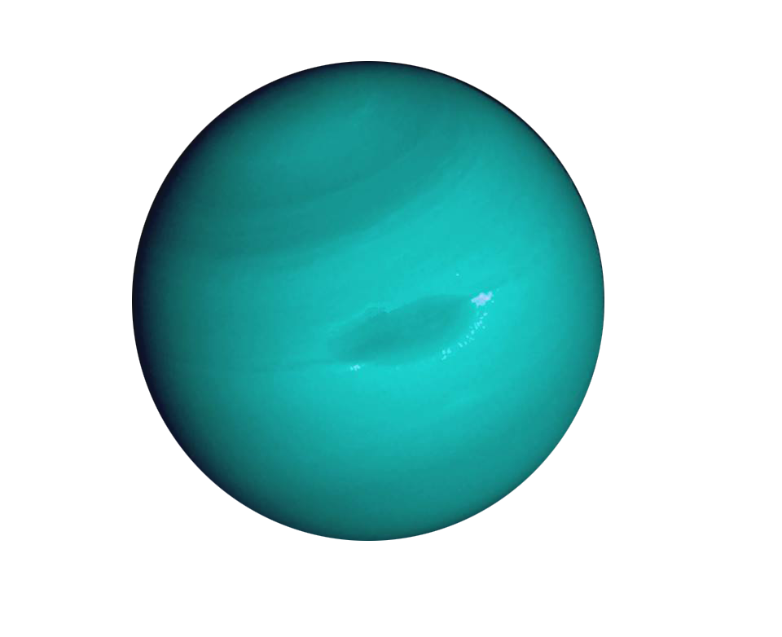
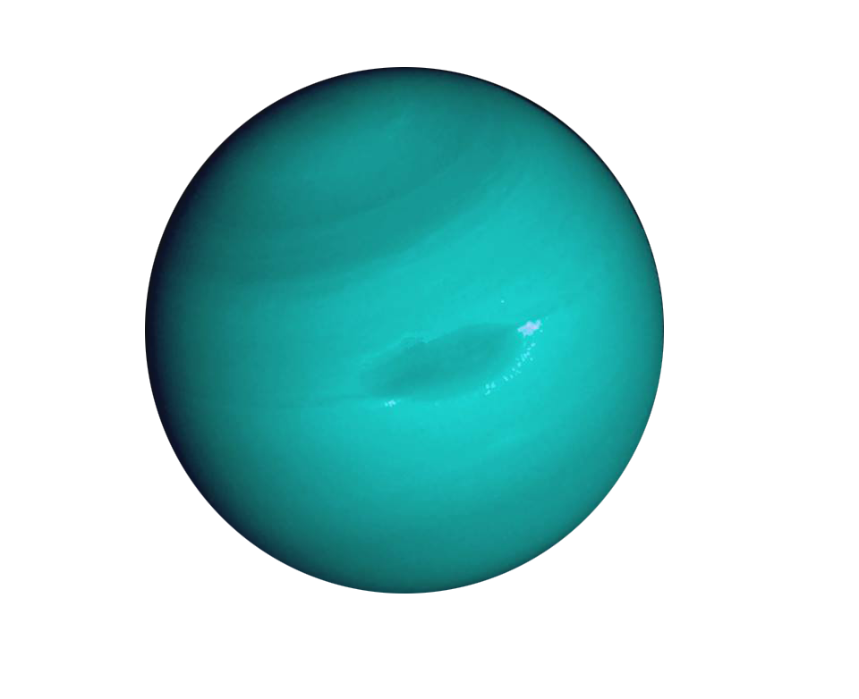

The inner, rocky planets are Mercury, Venus, Earth, and Mars. NASA's newest rover — Perseverance — landed on Mars on Feb. 18, 2021. The outer planets are gas giants Jupiter and Saturn and ice giants Uranus and Neptune.
The key difference between a planet and a dwarf planet is the kinds of objects that share its orbit around the Sun.
Pluto, for example, has not cleared its orbit of similar objects while Earth or Jupiter have no similarly-sized worlds on the same path around the Sun.
The five best-known dwarf planets are Ceres, Pluto, Makemake, Haumea, and Eris. Except for Ceres, which lies in the main asteroid belt, these small worlds are located in the Kuiper Belt. They're considered dwarfs because they are massive, round, and orbit the Sun, but haven't cleared their orbital path.